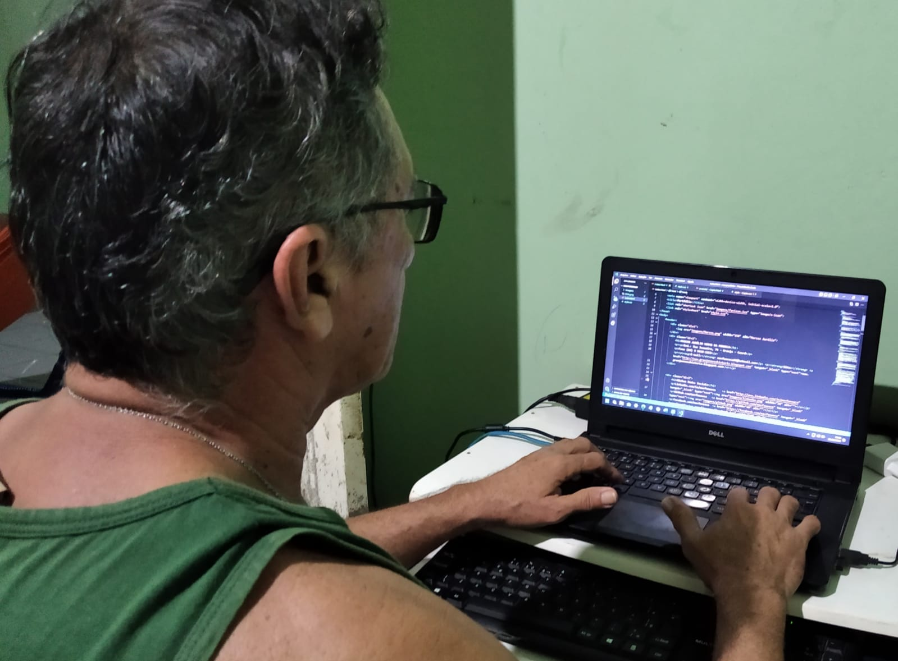

Meu Portfólio

Professor Graduado em Química pela UNIVERSIDADE ESTADUAL DO VALE DO ACARAÚ - UVA - SOBRAL-CE e Especialista em Mídias da Educação pela UNIVERSIDADE FEDERAL DO CEARÁ - UFC - FORTALEZA-CE. Atualmente estou como professor Regente do LABORATÓRIO ESCOLAR DE INFORMÁTICA-LEI do CEJA GUILHERME GOUVEIA, escola credenciada pela CREDE4 Camocim-CE.
Sou apaixonado por Tecnologias da Informação e estou sempre investindo nesse setor para melhorar a cada dia meus conhecimentos
Atualmente Cursando HTML5 e CSS3 pelo site https://www.cursoemvideo.com
Cursando HTML5 e CSS3 no Tech Academy - https://startse.com - Academia gratuita de formação de desenvolvedores
FORMAÇÃO
EXPERIÊNCIAS PROFISSIONAIS
HABILIDADES PROFISSIONAIS
CURSOS E ESPECIALIZAÇÕES
Marcos Aurélio Veras da Fonseca.
Granja, CE junho de 2022